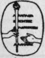

Mart Haney's Mate: Money Magic | by Hamlin Garland
During the flush times in Cripple Creek, I was invited one evening by a writer on a Denver newspaper to visit with him some of the gambling halls in which it was his habit to spend an hour or two in search of the latest news of "strikes," "sales," and "leases," and in one of the largest of the many saloons we stood for some time studying the men engaged in games of chance. Who was he? What was he dreaming about? The answer to these questions I put into a story which I called "Mart Haney's Mate" and which was (in part) serialized under that title. Later, when the time came to publish in book form, I submitted six other titles to my editors. Out of this list they voted for Money Magic.
| Title | Mart Haney's Mate: Money Magic |
| Author | Hamlin Garland |
| Publisher | Harper & Brothers |
| Year | 1907 |
| Copyright | 1907, Hamlin Garland |
| Amazon | Mart Haney's mate: money magic |
By Hamlin Garland, Author of Main-Travelled Roads, etc.
 Foreword
Foreword- During the flush times in Cripple Creek, I was invited one evening by a writer on a Denver newspaper to visit with him some of the gambling halls in which it was his habit to spend an hour or two in s...
- Chapter I. The Clerk Of The Golden Eagle
- SIBLEY JUNCTION is in the sub-tropic zone of Colorado. It lies in a hot, dry, but immensely productive valley at an altitude of some four thousand feet above the sea, a village laced with irrigating d...
- The Clerk Of The Golden Eagle. Part 2
- Don't you worry, she replied, with a confident smile. I can take care of myself. I grew up in Colorado. I'm no tenderfoot. This boast, so childish, so full of pathetic self-assertion, was still...
- The Clerk Of The Golden Eagle. Part 3
- That's an advantage, he admitted; but on the peak no one expects vegetables—it's still a matter of ham and eggs. Is that so? she asked, concernedly. Tis indeed. I live at the Palace Hotel...
- The Clerk Of The Golden Eagle. Part 4
- But he's going to give that up, he says. He hadn't said this, but she was sure he would. His income is a hundred thousand dollars a year. Think of that! I don't want to think of it, the girl ...
- Chapter II. Marshall Haney Changes Heart
- IT was well for Haney that Bertie did not see him as he sat above his gambling boards, watchful, keen-eyed, grim of visage, for she would have trembled in fear of him. Haney's was both saloon and g...
- Chapter III. Bertha Yields To Temptation
- BERTIE looked older and graver when Haney entered the Eagle Hotel, and his heart expanded with a tenderness that was partly paternal. She seemed so young and looked so pale and troubled. She greete...
- Bertha Yields To Temptation. Part 2
- The waitresses stared, and young Mrs. Gilman came hurrying. What's the matter, Bertie; are you sick? Oh no—but I'm worried—about mother. You haven't heard anything—? No, but she looked...
- Bertha Yields To Temptation. Part 3
- She did not follow this lead. I've been to Denver once—went on one of these excursion tickets. How did you like it there? Pretty good; but I got awful tired, and the grub at the hotel was t...
- Chapter IV. Haney Meets An Avenger
- HANEY took the train back to his mountain town in a mood which made him regard his action as that of a stranger. Whenever he recalled Bertha's trusting clasp of his hand he felt like removing his hat ...
- Haney Meets An Avenger. Continued
- Mart did not reply. His supreme desire attended to, he sank into a patient immobility that approached stupor, while the surgeon worked with intent haste to stop the flow of blood. The wound was most b...
- Chapter V. Bertha's Upward Flight
- BERTHA was eating her supper, after a hard day's work in her little hotel, when a little yellow envelope was handed to her. The words of the message were few, but they were meaning-full: Come at once...
- Bertha's Upward Flight. Continued
- Pretty bad. What's it all about? How did it happen? I'll clear that up as we go, he replied, and led the way to a carriage. Once inside, she turned her keen gaze upon him. Now go ahead...
- Chapter VI. The Haney Palace
- ONE day early in the following summer a tall, thin man, with one helpless side, entered the big luminous hall of the Antlers Hotel at the Springs, upheld by a stalwart attendant, and accompanied by a ...
- The Haney Palace. Continued
- You don't mean it? said Bertha, while Mrs. Gilman stared at him over her soup. He went on quietly. Sure! Me mind's made up. You want the garden and I like the porch; so 'phone the agent after di...
- Chapter VII. Bertha Repulses An Enemy
- CHARLES HANEY had no scruples. From the moment of his first meeti ig with his brother's young wife he determined to make himself solid with her. Convinced that Mart was not long for this world, he s...
- Bertha Repulses An Enemy. Part 2
- Oh, well, yes. You artists can do anything, and it's all right. You must come over immediately afterwards and tell me all about it, won't you? At this Mrs. Congdon laughed, but, being of generous...
- Bertha Repulses An Enemy. Part 3
- Slowly, day by day, Charles regained Mart's interest and a measure of his confidence. Having learned what to avoid and what to emphasize, he now deplored the drink habits of his brothers, and gently s...
- Chapter VIII. Bertha Receives An Invitation
- COLORADO SPRINGS lies in a shallow valley, under a genial sun, at almost the exact level of the summit of Mt. Washington. From the railway train, as it crawls over the hills to the east, it looks like...
- Bertha Receives An Invitation. Continued
- That incident is easily explained. Winchell knew her in Sibley, and though he has undoubtedly followed her over here for love of her, he seems a decent fellow, and I don't believe intends any harm. I...
- Chapter IX. Bertha Meets Ben Fordyce
- FOR all her impassivity, Bertha was really elated by this invitation, for she liked Congdon, and had a very high opinion of his powers. She experienced no special dread of the dinner, for it appeared ...
- Bertha Meets Ben Fordyce. Part 2
- Mrs. Congdon explained meanwhile that Frank had made the big centre-table of plank, and the bookshelves as well. He likes to tinker at such things, she said. Whenever he gets blue or cross I set hi...
- Bertha Meets Ben Fordyce. Part 3
- As he thought of the quiet Quaker neighborhood from which he came, and contrasted these singular and powerfully defined personalities with the men of weight and the demure maidens of his acquaintanc...
- Bertha Meets Ben Fordyce. Part 4
- He sang other songs—tunes not worthy of him— but ended with a ballad called Fair Springtide, by MacDowell—a song so stern, so strange, so inexorably sad that the singer himself grew grave at last an...
- Chapter X. Ben Pordyce Calls On Horseback
- BEN FORDYCE and his affianced bride rode home talking of the Haneys. Aren't they deliciously Western! she said. Mrs. Haney certainly is a quaint little thing, he replied, quite soberly; she's ...
- Ben Pordyce Calls On Horseback. Part 2
- Come in and see the house, said Bertha, in brusque invitation. It isn't ship-shape yet. I wanted to do it all myself, but I find it's a big proposition to go up against. It sure is. But I like it. ...
- Ben Pordyce Calls On Horseback. Part 3
- Oh no, replied Ben, we don't want to do that. Are you tired? He became anxious at once. No, no! Please go! Mrs. Haney wants to race—I can see that; and I'd really like to see her ride—she sits...
- Chapter XI. Ben Becomes Adviser To Mrs. Haney
- BERTHA was astir early the next morning, and quite ready to join the Fordyces as soon as breakfast was over; but they did not come. She waited and watched the whole forenoon, and when at twelve o'cloc...
- Ben Becomes Adviser To Mrs. Haney. Part 2
- The intimacy thus established between the Haneys and the Congdon circle furnished the gossip of the upper ten with vital material for discussion. Mrs. Crego most decidedly disapproved of their cal...
- Ben Becomes Adviser To Mrs. Haney. Part 3
- She took up his phrase. In spite of his business. I know, that was mother's main objection to him. But, you see, he cleaned all out of that before I married him. He hasn't touched a card since. H...
- Ben Becomes Adviser To Mrs. Haney. Part 4
- For a time the burden of the conversation was his. Haney was in a reflective mood, and Bertha busied with the table service, which she was trying to raise to the level of her honored guests, was distr...
- Chapter XII. Alice Heath Has A Vision
- THIS change of legal adviser, while very important to Ben Fordyce and the Haneys, did not seem to trouble Allen Crego very much. As a matter of fact, he was about to run for Congress, and had all the ...
- Alice Heath Has A Vision. Part 2
- She found words difficult at the moment. His face and voice dazzled her like an open door towards sunshine, and after a moment's pause she looked round the room, saying: It's going to be fine. I...
- Alice Heath Has A Vision. Part 3
- For some reason the day had been most wearing, and to dress for dinner was an effort. But she made herself as lovely as she could for Ben's sake—and for the sake of the Congdons with whom they were to...
- Alice Heath Has A Vision. Part 4
- 'That's what I say. It isn't reasonable, I refuse to believe it.' Just then something seemed to break loose in the back part of the house. Wash-boilers seemed to be falling on the kitchen range, and ...
- Chapter XIII. Bertha's Yellow Cart
- BEN found his office a most cheerful and pleasant resort—just what he needed. And each morning as soon as his breakfast was eaten, he went to his desk to write, to read his morning paper, and to glanc...
- Bertha's Yellow Cart. Continued
- No; that's the remarkable thing. She's reading history and biography. Isn't it too bad she couldn't have had Bryn Mawr or Vassar? I've advised her to have in some one of the university people to coac...
- Chapter XIV. The Jolly Send-Off
- THE Mrs. Haney who came to Alice Heath's dinner at the Antlers was in outward seeming an entirely different person from the constrained young wife who stepped into Lee Congdon's home that night of her...
- The Jolly Send-Off. Continued
- Alice said good-bye at the carriage door, but Ben went with them into the coach. And in the excitement of getting to the train and into the car Bertha had been able to forget the sick feeling about he...
- Chapter XV. Mart's Visit To His Sister
- BERTHA woke next morning with a sense of weariness and desolation still at her heart, but she dressed and went to breakfast with Haney at an hour so early that the dining-room was nearly empty. Lucius...
- Mart's Visit To His Sister. Part 2
- She met Mrs. Brent with something of this mood in her manner, but was instantly softened and won by her visitor, who did not in the least resemble Miss Franklin in appearance, though her voice was won...
- Mart's Visit To His Sister. Part 3
- She's too young and pretty—and Mart, ye're lame! And, howly saints, man, ye look old! I wouldn't have known ye but fer the mouth and the eyes of ye. Ye have the same old grin. The same to you. ...
- Chapter XVI. A Dinner And A Play
- LUCIUS seemed to know the city very well, and to have a list of its principal citizens in his memory. He knew the best places to shop and the selectest places to eat, and Bertha soon came to ask his a...
- A Dinner And A Play. Part 2
- Miss Franklin was certain that this circle would enjoy the Captain once he became at ease, and she really hoped Mrs. Brent would advise the girl, and, as she put it, Help her to get at the pleasant...
- A Dinner And A Play. Part 3
- The play that night appalled her by its fury of passion, its mockery of woman, its cynical disbelief in man. With startling abruotness and in most colloquial method it delineated the beginning of a yo...
- Chapter XVII. Bertha Becomes A Patron Of Art
- BERTHA, deeply engrossed in the conceptions called up by this visit, did not feel like calling upon the Mosses, even though they were almost next door. She was troubled, too, with a feeling of helples...
- Bertha Becomes A Patron Of Art. Continued
- Joe earnestly protested. Don't do it, Captain, there's some Scotch down cellar. Mrs. Moss indicated one or two other dimly seen faces about her and introduced their owners in a most casual manner...
- Chapter XVIII Bertha's Portrait Is Discussed
- JOE MOSS was delighted with the Haneys, for they talked of their native West as people should talk. They were as absolute in their convictions as a Kentuckian. For them there was no other God's count...
- Chapter XVIII Bertha's Portrait Is Discussed. Part 2
- May I see my picture? she asked of Humiston. He turned the easel towards her without a word. Good work! cried Moss. Mrs. Moss came from her dark corner. I knew you'd do something exquisite. ...
- Chapter XVIII Bertha's Portrait Is Discussed. Part 3
- He had forgotten where be sat, but he was not neglecting his hostess. He took a satanic satisfaction in seeing her lovely eyes widen and glow as he went on. Subtly flattering her by including her amon...
- Chapter XIX. The Farther Bast
- HANEY visibly brightened as the days went by, and took long rides in his auto, sometimes with Bertha, sometimes alone with Lucius, and now and then with some old acquaintance, who, having seen his nam...
- The Farther Bast. Part 2
- Surely life was growing complex. With bewildering swiftness the experiences of a woman of the world were advancing upon her, and she, with no brother or father to be her guard, or friend to give her c...
- The Farther Bast. Part 3
- Don't! she said, starting back in alarm—don't! His face changed instantly, the clear candor of his voice reassured her. Don't be afraid. I mean what I said. You need have no fear that I—that m...
- Chapter XX. Bertha Meets Manhattan
- IT was a green land in which she woke. The leaves were just putting forth their feathery fronds of foliage, and the shorn lawns, the waving floods of growing wheat, and the smooth slopes of pastures p...
- Bertha Meets Manhattan. Part 2
- Siegel grasped the situation. Sure! Vy, how you vass dis dime, eh! Veil, veil—you gome pack in style, ain't it ? Your daughter—yes ? My wife, said Haney. Siegel raised a fat arm, which a dir...
- Bertha Meets Manhattan. Part 3
- Bertha accepted it all with cold impassivity; it was only a little higher gloss, a little more glitter than they had suffered in Chicago; and she was getting used to seeing men in braid and buttons h...
- Chapter XXI. Bertha Makes A Promise
- AS for Marshall Haney, as he went about New York and Brooklyn in search of his relations, he was astounded at the translation of the Irish laborer into something else. In my time, when I left Troy, a...
- Bertha Makes A Promise. Part 2
- While still she sat sombrely looking out over the city's roofs, Humiston's card was brought to her, and at the moment, in her loneliness and doubt, he seemed like an old friend. Tell him to come up,...
- Bertha Makes A Promise. Part 3
- The old man touched a gilded chair tenderly, and Mart cried out: Lay hold, man, 'twill not rub off! Sit down and look about ye! Out with your new pipe and smoke up! He took a seat with forced con...
- Chapter XXII. The Serpent's Coil
- LOFTY as Jerome Humiston talked, and poetic as ^his face seemed to Bertha Haney, he was at heart infinitely more destructive than any man she had ever known; for he took a satanic delight in proving t...
- The Serpent's Coil. Continued
- The Chicago papers were still filled with criticism of his work and his theories, and this discussion, as well as the appearance of his portrait in the magazines, had made of him a very exalted person...
- Chapter XXIII. Bertha's Flight
- BEFORE she had fairly recovered her poise next day Lucius brought to her a letter from Humiston —a suave, impudent note wherein he expressed the hope that she was well, and went on to plead in veiled ...
- Bertha's Flight. Part 2
- This mountain girl had always regarded Illinois as the East, but after a few weeks in New York City she now looked away to Chicago as a Western town. She was glad to face the sunset sky again, and y...
- Bertha's Flight. Part 3
- She saw Sibley now for what it was—a village almost barren of beauty—a good, kindly, homey place, but so little and so dull! To go back there to live was quite impossible. If I quit Mart I must find ...
- Bertha's Flight. Part 4
- Bertha interrupted: I want you to lay off and go out for a whirl in our machine. ' How gay!' cried Moss. I ought to be working, for my rent is coming due; but what's the cliff ? Here goes! Come...
- Bertha's Flight. Part 5
- She faced him squarely. No, he has been the real thing. He kept a saloon—when I first knew him, but he gave it all up for me. I wouldn't promise to marry him till he did. Everybody out there knows hi...
- Chapter XXIV. The Haneys Return To The Peaks
- THE forces that really move most men are the small, concrete, individual experiences of life. The death of a child is of more account to its parents than the fall of a republic. Napoleon did not forge...
- The Haneys Return To The Peaks. Part 2
- She promised, of course, but the chasm between them was widened, and a fear of his again yielding to temptation cut short her stay in the city, for Lucius warningly explained: The Captain is settling...
- The Haneys Return To The Peaks. Part 3
- Julia came in and was quite as outspoken in her regret, and both refused to say good-bye at the moment. We'll see you at the station, they said, and Bertha went away, feeling the pain of parting les...
- The Haneys Return To The Peaks. Part 4
- Freight! From all I've heard of your doings in Chicago I expected it to come as excess baggage. It was cool, delicious green dusk—not dark—with a small sickle of moon in the west, and as they dro...
- Chapter XXV. Bertha's Decision
- IT was good to wake in her old room and see the morning light breaking in golden waves against the peaks, to hear her dogs bay and to listen to the murmuring voice of the fountains on the lawn. It was...
- Bertha's Decision. Part 2
- One night as she was passing his chair he reached for her and caught her and drew her down upon his knee. Sit ye down a wink. Ye're always on the move like a flibberty-bidget. She struggled free ...
- Bertha's Decision. Part 3
- There was something in his eloquence that went to the heart of the dreaming girl. If any one in her world was to be trusted it was this ugly little man, who never presumed to ask even a smile for hims...
- Chapter XXVI. Alice Visits Haney
- ALICE HEATH was dying of something far subtlef f\ than the White Death, to which Haney so often referred. Tortured by Ben's studied tenderness when at her side, she suffered doubly when he was away,...
- Alice Visits Haney. Part 2
- Money can do much, but it can't buy happiness. That's true, too—but 'tis able to buy comfort, and that's next door to happiness in the long-run, I'm thinkin'. But I'm watchin' her, and I don't i...
- Alice Visits Haney. Part 3
- I understand what you say, miss, and I think you're honest, but you may be mistaken. I saw her meet-up with fine young fellies in the East; I could see they admired her—but she turned them down easi...
- Chapter XXVII. Marshall Haney's Sentence
- AFTER Alice Heath's carriage had driven away, Haney returned to his chair, and with eyes fixed upon the distant peaks gave himself up to a review of all that the sick woman had said, and entered also ...
- Marshall Haney's Sentence. Part 2
- Bertha did not wait for him to begin, and her first words smote like bullets. Mart, I'm going back to Sibley. He looked at her with startled eyes — his brow wrinkling into sorrowful lines. For h...
- Marshall Haney's Sentence. Part 3
- Running to him, all her repugnance gone, all hef tenderness awake, she put her arm about his shoulders. Oh, Mart, did he hurt you? Are you worse? He raised dim eyes to her, eyes that seemed alrea...
- Chapter XXVIII. Virtue Triumphs
- MART maintained his deceptive cheer at the break-fast-table, and the haggard look of the earlier hour passed away as he resolutely attacked his chop. He spoke of his exile in a tone of resignation—mix...
- Virtue Triumphs. Continued
- At the door of Ben's office building she got out, leaving him in the carriage. As she looked back at him from the doorway something which seemed like anguish in his face moved her, and she returned to...
- Chapter XXIX. Marshall Haney S Last Trail
- MARSHALL HANEY was a brave man, and his resolution was fully taken, but that final touch of Bertha's hand upon his arm very nearly unnerved him. His courage abruptly fell away, and, leaning back again...
- Marshall Haney S Last Trail. Continued
- Then came that unforgetable drive to the ranch, when she put her hand in his—and on this hour he dwelt long, searching his mind deeply in order that no grain of its golden store of incident should esc...
- Harper Fiction
- The Vehement Flame, By Margaret Deland Can a man marry a woman twenty years his senior— and be happy and remain true to the wife of his choice? This—and the Biblical quotation from the Song of Solo...
- Books By Younger English Writers
- Caliban, By W. L. George The romance of a newspaper genius. He had become—this common London boy—Lord Bulmer of Bayne. And yet at the height of all his power he stood helpless as a child before one...